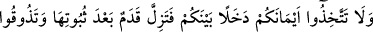
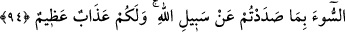

süm‘a (duysunlar diye yapma) ile elde etmeye çalışır. Bunlar ona Allah’tan bir ibtilâ
olarak verilmiş olup nefsin tefâhuru esnasında Allah kendi izzetini böylece gösterir.
Nefse âid olan bu şehvetler onu matlubu olan Allah’tan alıkoyar ve uzaklaştırır. İşte
böyle bir kimseye, Hak’tan uzaklık ve mahrumiyet cehennemi yeter.
Hz. Üftâde (k.s.) der ki: Bursa’da Molla Celâl’in oğlunun oğlu Dîvâne Çelebi
denilen bir adam vardı. Yer, içer ve şehvetlerle uğraşırdı. Böyleyken mazharlardan
hakîkate nazar ettiğini iddiâ ederdi. Allah Teâlâ bizi ilhaddan korusun. Ölüm
hastalığında tevbe ve istiğfar edip: “Yazıklar olsun bana ben tarîkatı tanıyamamışım.”
dedi. Vefatından önce pişman olduğu için mağfiret olacağı umulur. Onun bir takım âdî
keşifleri vardı. Bir defasında bir adımda yetmiş adımlık, belki de daha uzun bir
mesâfeyi katetmişti. Ne var ki tabîat mertebesinde zuhûr eden bu gibi süflî keşifler
makbul değildir. Bunlar şeytandandır ve insanların çoğu cehâletlerinden dolayı hayır ve
şerrin arasını ayırt edemedikleri için bu gibi kişileri kutub, hatta gavs-ı a’zâm sayarlar.
Bu işin zorluğuna binaen Molla Câmi (k.s.) rubâîlerin birinde der ki:
Mescidlerde ve tekkelerde çok dolaştım
Çok şeyh ve müridin ayağını öptüm
Ne bir saat kendi varlığımdan kurtuldum
Ne de kimseyi kendi enâniyyetinden kurtulmuş gördüm
Allah’ım, bizi iddiâdan koru ve ehl-i takvâdan kıl.
94. Yeminlerinizi aranızda fesada araç edinmeyin, aksi halde (İslâm’da) sebat
etmişken ayağınız kayar da (insanları) Allah yolundan alıkoymanız sebebiyle
(dünyada) kötülüğü tadarsınız. Sizin için (âhirette de) büyük bir azap vardır.
“Yeminlerinizi aranızda fesada araç edinmeyin” hîle ve zulüm vâsıtası yapmayın.
“aksi halde” ey müminler! “sebat etmişken ayağınız” îmanda iyice yerleşip sâbit
olduktan sonra ayaklarınız hak yoldan “kayar da…”
“Kadem (ayak)” kelimesinin müfred ve nekre olarak gelmesi, kuvvetli yahut zayıf
hangi ayak olursa olsun tek bir ayağın dahî kayması sebebiyle büyük bir tehlike
meydana geleceğini haber vermek içindir. Buna göre birden fazla ayak kayarsa durum
nasıl olur?!
“(İnsanları) Allah yolundan alıkoymanız sebebiyle (dünyada) kötülüğü tadarsınız.”
Ahid ve yeminlerde vefânın tertib ve düzenini sağlayan Allah yolundan döndürülüp
çıkmanız ya da başkasını bu yoldan men edip çevirmeniz sebebiyle dünyevî bir azâbı